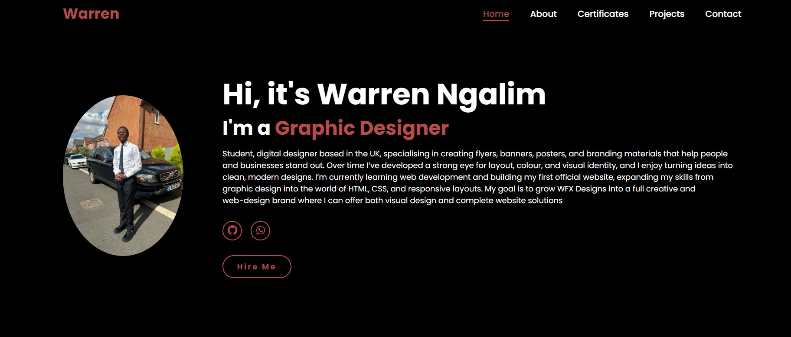
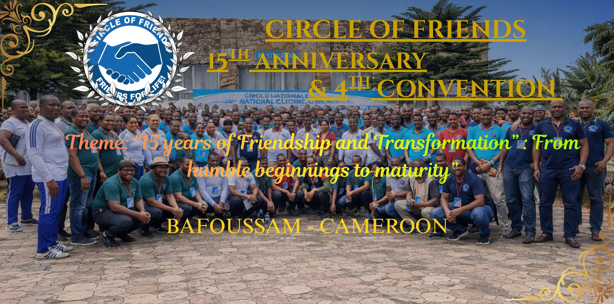
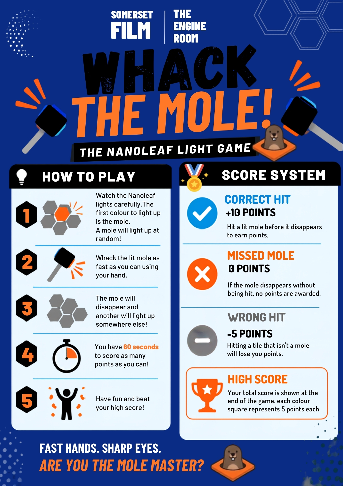
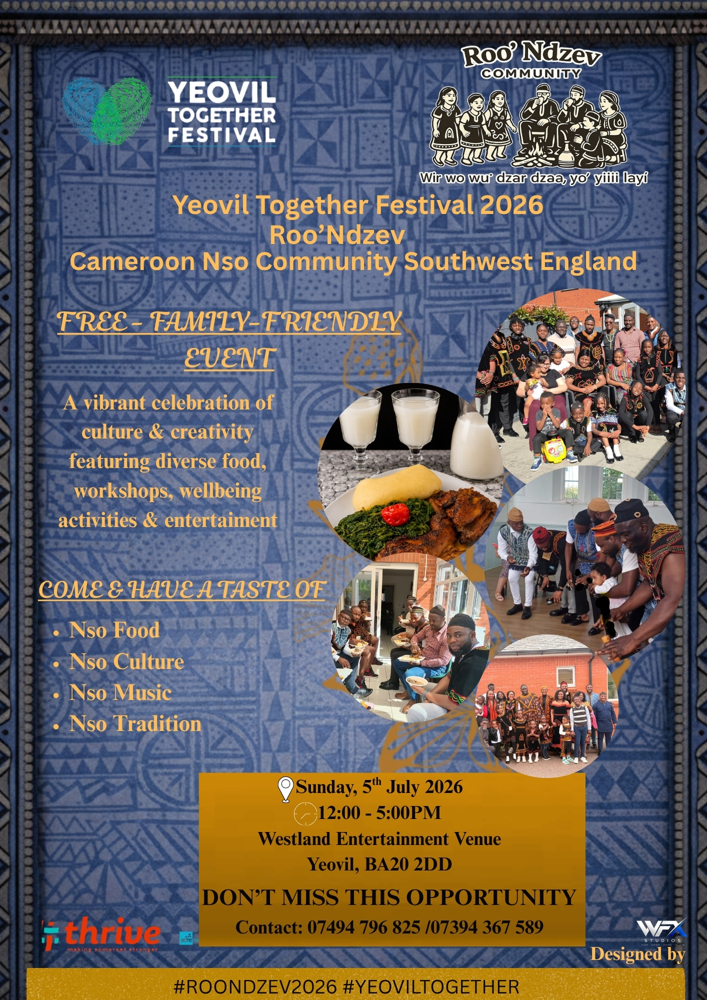

Filming and editing short film for Somerset film during the Young Photographers Exhibition

A fully responsive personal portfolio built using HTML & CSS. Includes About, Education, Projects, and Certifications pages.

Branding and graphic design work including posters, flyers, and logo concepts for WFX Designs. I have done work for Circle of freinds

Created posters for Somerset Film for a fun activity during the Youth Exhibition

Created banners and flyers for ROO' Ndzev a community in southwest England